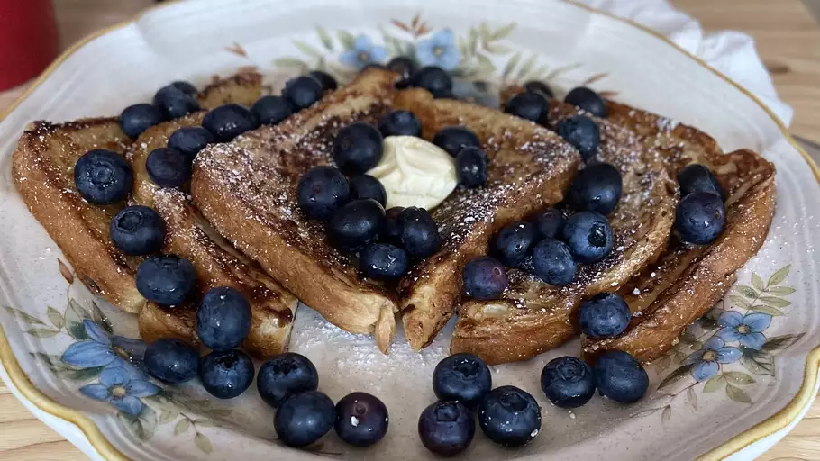

French Toast Recipe

Make some delicious french toast with this simple recipe! Original source of the recipe can be found here.
Ingredients
- ⅔ cups of milk
- 2 large eggs
- 6 thick slices of bread
- 1 tablespoon unsalted butter, or more as needed
- Salt to taste
- Optional: 1 teaspoon vanilla extract
- Optional: ¼ teaspoon ground cinnamon
- Optional: Fruits and syrup as desired
Directions
- Gather all your ingredients
- Whisk milk, eggs, vanilla, cinnamon, and salt together in a shallow bowl.
- Lightly butter a griddle or skillet and heat over medium-high heat.
- Dunk bread in the egg mixture, soaking both sides.
- Transfer to the hot skillet and cook until golden, 3 to 4 minutes per side.
- Serve hot, adding fruits and syrup as desired
Navigation